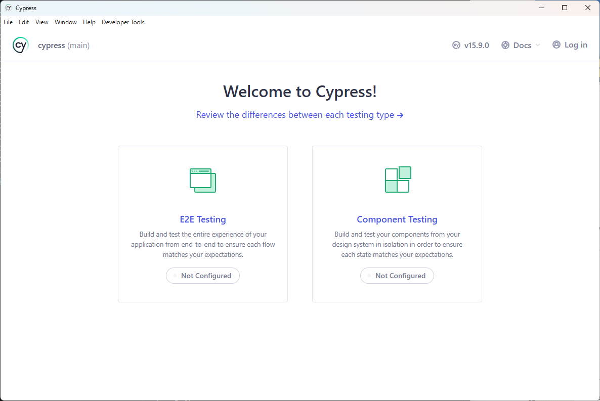
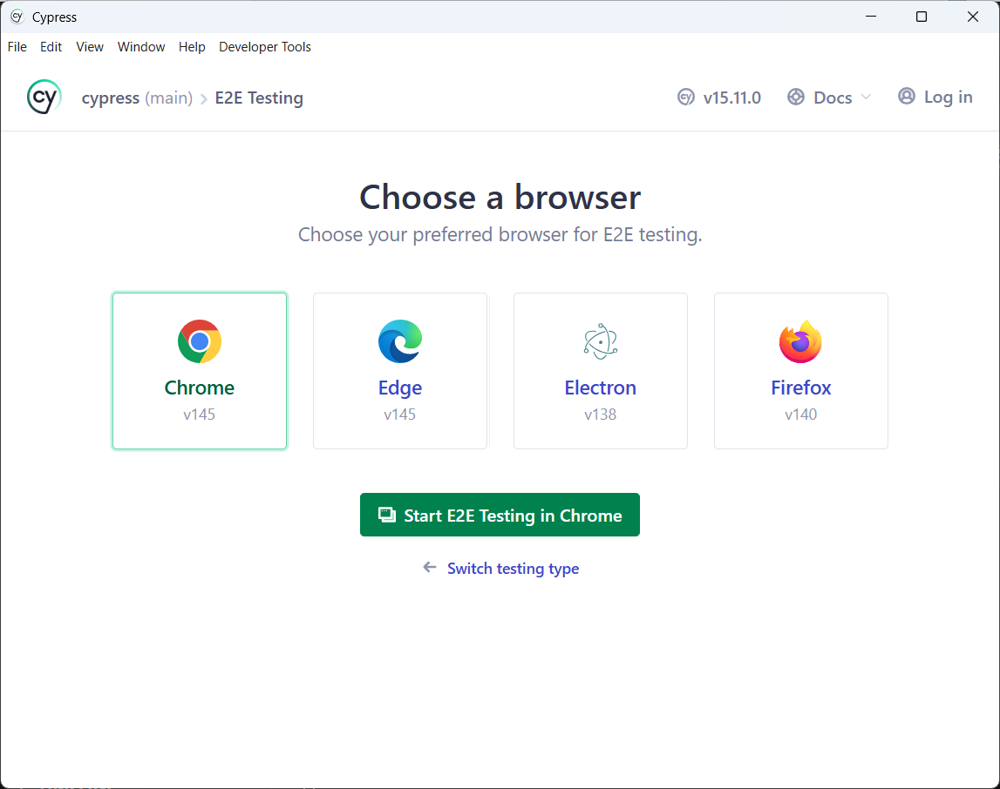
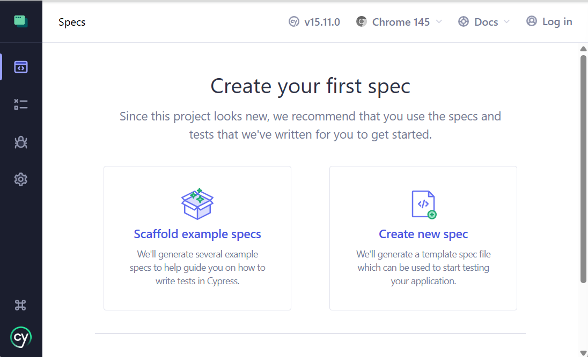
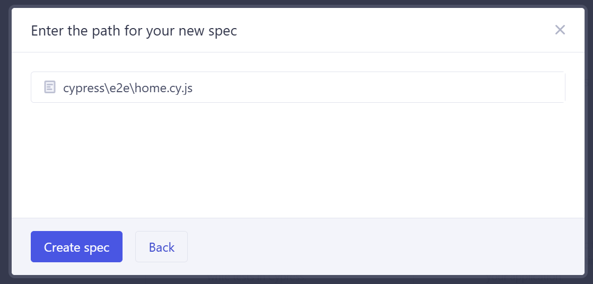
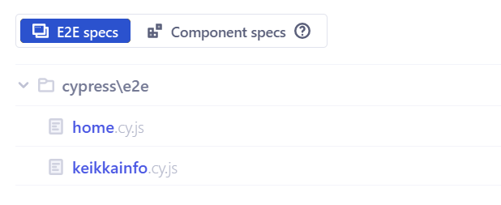

Cypress-testaus
CYpress on frontend testausautomaatiotyökalu. Cypressin avulla voidaan testata web-sovelluksia suorittaen tietty toiminta alusta loppuun (E2E-testing).
Asennus
Tee itsellesi kansio cypress ja suorita siellä
npm init npm i cypress --save-dev
Tämän jälkeen käynnistä Cypress komennolla
npx cypress open
Valitse E2E-testaus

Anna konfiguraatiotiedostojen olla oletusasetuksilla ja valitse seuraavassa vaiheessa selaimeksi Chrome.

Testaaminen
Valitse Create new spec

Anna nimeksi home.cy.js

Korvaa VSCodessa tiedoston sisällöksi notesdemon avaaminen:
describe('Notesdemo-test-demo', () => {
it('Visits notesdemo-test-page', () => {
cy.visit('https://notestest.eermau.treok.io/')
})
})
Jotta osoitetta ei tarvitse kertoa joka kerta niin lisätään osoite cypress.config.js-tiedostoon
module.exports = defineConfig({
e2e: {
baseUrl: 'https://notestest.eermau.treok.io/',
},
});
Nyt testin voi kirjoittaa suoraan näin:
describe('Notesdemo-test-demo', () => {
it('Visits notesdemo-test-page', () => {
cy.visit('/')
})
})
Lisää sisäänkirjautuminen omaksi apumetodiksi. Lisää tiedostoon support/commands.js:
Cypress.Commands.add('login', (username, password) => {
cy.visit('/')
cy.get('input[id=lusername]').type(username)
// {enter} causes the form to submit
cy.get('input[id=lpassword]').type(`${password}{enter}`, { log: false })
// we are logged in!
cy.contains('tester1')
})
Lisätään login-kutsu mukaan testitiedostoon home.cy.js
const username="tester1";
const password="salasana";
const test_message = "Cypress testing";
describe('The Home Page', () => {
it('successfully loads', () => {
cy.visit('/') // defaults to baseURL in config-file
cy.login(username, password)
})
})
Huom. jotta kaikki eivät käytä samaa tester1-tunnusta on hyvä rekisteröidä oma testitunnus (esim. tester100) ja korvata tester1 tällä tunnuksella.
Kirjautumisen pitäisi mennä läpi. Seuraavaksi kokeillaan lisätä uusi muistiinpano.
cy.get('input[id=important]').click()
cy.get('input[id=content]').type(`${test_message}{enter}`)
Lopuksi kirjaudutaan vielä ulos
cy.get('button[id=btnLogout]').click()
Kehittyneemmät testit
Äskeisillä esimerkeillä voidaan testata käyttöliittymää mutta se ei varmista onko haluttu muutos tehty. Tee aluksi itsellesi oma testikäyttäjä rekisteröitymisen kautta jotta testisi eivät sotke toisen testaajan testejä.
describe('Notesdemo basic tests', () => {
beforeEach(() => {
cy.visit('/') // defaults to baseURL in config-file
cy.login(username, password)
})
// tähän väliin tehdään testit
afterEach(()=> {
cy.get('button[id=btnLogout]').click()
})
})
Uuden tärkeän muistiinpanon lisääminen
it('add new important', () => {
cy.get('input[id=important]').click()
cy.get('input[id=content]').type(`${test_message} important{enter}`)
cy.get("li").contains("Cypress testing important").and('have.class', 'important')
})
Uuden normaalin muistiinpanon lisääminen
it('add new basic', () => {
cy.get('input[id=content]').type(`${test_message} normal{enter}`)
cy.get("li").contains("Cypress testing normal").and('have.class', 'normal')
})
Muistiinpanon tärkeyden muuttaminen important -> normal
it('change importance', () => {
cy.get("li").contains("Cypress testing important").click()
cy.get("li").contains("Cypress testing important").and('have.class', 'normal')
})
Poistetaan muistiinpanot jotka important mutta tyyli normal ja normaali jonka tyyli normal.
it('delete important', () => {
cy.get("li").contains("Cypress testing important").and('have.class', 'normal').find('button').click()
cy.get("li").contains("Cypress testing important").should('not.exist')
})
it('delete normal', () => {
cy.get("li").contains("Cypress testing normal").and('have.class', 'normal').find('button').click()
cy.get("li").contains("Cypress testing normal").should('not.exist')
})
Harjoitukset
- Lisää testi jolla testataan rekisteröityminen oikeilla ja väärillä tiedoilla.
- Lisää testi rekisteröitymiselle jossa tarkistetaan samalla tunnuksella oleva käyttäjä.
- Oman palvelun testaaminen: tee testit omalle cPanelin alle julkaistulle sovellukselle. Välttämättä sovellus ei vielä ole tällä hetkellä julkaistu mutta kun saat Fanikauppa 2.0:n tai Keikkainfo 2.0:n portfolioon laadi tälle työlle myös Cypress-testit. Kannattaa tehdä oma spec-tiedosto näille testeille.
